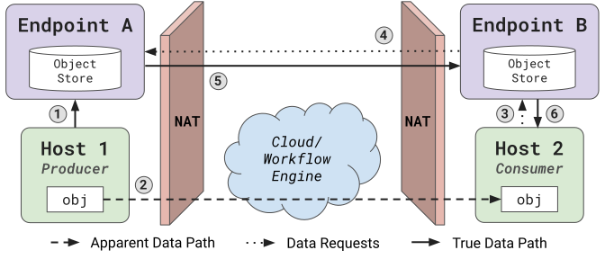

Peer-to-Peer Endpoints¶
Last updated 8 October 2026
ProxyStore Endpoints are in-memory object stores with peering capabilities. Endpoints enable data transfer with proxies between multiple sites using NAT traversal.
Use compatible ProxyStore and Python versions everywhere
Clients and endpoints should use the same major version of ProxyStore, and clients which exchange objects should use the same Python minor version. Mismatched versions can cause errors when objects are serialized in one environment and deserialized in another. See Version Compatibility for details.
Overview¶
At its core, the Endpoint is
an in-memory data store built on asyncio. Endpoints serve clients on the local
network over an authenticated TCP protocol (see Security), and
ProxyStore provides the
EndpointConnector as
the primary interface for clients to interact with endpoints.
Unlike popular in-memory data stores (Redis, Memcached, etc.), ProxyStore endpoints can operate as peers even from behind different NATs without the need to open ports or SSH tunnels. Endpoints connect to peers with iroh, a peer-to-peer library built on QUIC. Each endpoint is identified by its endpoint ID, the public key of the endpoint's secret key, and iroh finds the addresses of a peer from its ID, establishes a direct connection with UDP hole-punching when possible, and relays traffic otherwise. An endpoint only communicates with the peers in its allowlist (see Peering).
Clients interacting with an endpoint via typical object store operations (get, set, etc.) specify a key and an endpoint ID. Endpoints that receive a request with a different endpoint ID will attempt a peer connection to the endpoint if one does not exist already and forward the request along and facilitate returning the response back to the client.
Platform Support¶
Endpoints and their clients (e.g., the
EndpointConnector)
require the endpoints extra (pip install proxystore[endpoints]). Clients
and endpoints share the ProxyStore home directory, so use the same Python
environment for both. Peering uses the
iroh package which only
provides wheels for Linux (x86_64 and aarch64, glibc 2.28 or newer) and macOS
(arm64).
Endpoint CLI¶
Endpoints can be configured and started with the
proxystore-endpoint
command.
$ proxystore-endpoint configure my-endpoint
Configured endpoint: my-endpoint <ed924cda74a1f625ea4e34bc7f3d4759f298b1a950dc41f87484d24023757173>
Config and log file directory: ~/.local/share/proxystore/my-endpoint
Start the endpoint with:
$ proxystore-endpoint start my-endpoint
Allow a peer endpoint to communicate with this one with:
$ proxystore-endpoint peers add my-endpoint PEER_NAME PEER_ID
Endpoint configurations are stored in $PROXYSTORE_HOME/{endpoint-name}
or $XDG_DATA_HOME/proxystore/{endpoint-name}
(see home_dir()) and contain the
name, ID, host address, port, and more. The endpoint's secret key
is stored separately in the secret.key file which only the owner can read.
Tip
By default, $XDG_DATA_HOME/proxystore will usually resolve to
~/.local/share/proxystore. You can change this behavior by setting
$PROXYSTORE_HOME in your ~/.bashrc or similar configuration file.
A typical configuration looks like the following.
- Format version of the configuration file. ProxyStore uses this to detect configurations written by an incompatible version.
- Human-readable name of this endpoint. Must match the name of the endpoint directory.
- Unique identifier of this endpoint. This is the public key of the
endpoint's secret key and must match the key in
secret.key. - Port clients use to connect to the endpoint. A random port is chosen when
the endpoint is configured unless
--portis given. - Address clients use to connect to the endpoint. "ip" and "fqdn" use the
IP address or fully-qualified domain name of the node, determined each
time the endpoint starts. Any other value is used as a static address
(e.g.,
host = "127.0.0.1"). - Encrypt connections between clients and the endpoint with TLS. See Security for details.
- Maximum size of an object that clients or peers can set, in bytes
(e.g.,
100000000) or as a string with units (e.g.,"100 MB"or"1 GiB"). Defaults to 100 MB if omitted. Set to0to disable object size limits. - Enable communication with peer endpoints. If
false, the endpoint operates in isolation. Configure with--no-peeringto disable peering. - Relays used to connect to peers. See Relays.
- Discovery service used to find the addresses of peers. See Relays.
- Storage backend.
"memory"(the default) stores objects in memory, and"sqlite"persists objects to a SQLite database. See the tip below for more details. - Optional path to the SQLite database, which defaults to
blobs.db. A relative path is relative to the endpoint directory. Use an absolute path to store a large database elsewhere, such as a parallel file system. Only valid with the"sqlite"backend.
Tip
Endpoints provide no data persistence by default, but this can be enabled
by passing the --persist flag when configuring the endpoint or by
setting backend = "sqlite" in the [storage] section of the config.
Blobs stored by the endpoint will then be written to a SQLite database
file. Note this will result in slower performance.
An up-to-date configuration description can be found in the
EndpointConfig docstring.
Starting the endpoint will load the configuration from the ProxyStore home directory, initialize the endpoint, and start serving clients on the host and port.
Note
By default (host = "ip"), the endpoint is served on the IP address of
the node where the endpoint is started, so an endpoint can be configured
and started on different nodes. If clients cannot reach the endpoint at
that IP address, host = "fqdn" uses the fully-qualified domain name
instead, or set a static address (e.g., host = "12.34.56.78"). The
--host flag can also be used during configuration. The endpoint never
modifies its configuration; the resolved address is written to the
connection.json file which clients read.
Peering¶
Adding Peers¶
Two endpoints can only communicate if each endpoint has the other in its
allowlist of peers, the peers.toml file in the endpoint directory.
Allowlisting the same peer on both sides is required, and the endpoint
refuses connections from, and requests to, any other endpoint. Peer
connections are encrypted and authenticated with TLS 1.3, so an endpoint
cannot pretend to be another endpoint without its secret key.
To connect endpoints on two systems, get the ID of each endpoint:
$ proxystore-endpoint id my-endpoint # On system A
ed924cda74a1f625ea4e34bc7f3d4759f298b1a950dc41f87484d24023757173
$ proxystore-endpoint id cluster-endpoint # On system B
00a28e0d64fdb50d85d5cd1ff9d620cd6215a28c5c6c3e19637e09d2cbb54741
Then add each endpoint to the peers of the other:
# On system A
$ proxystore-endpoint peers add my-endpoint cluster 00a28e0d64fdb50d85d5cd1ff9d620cd6215a28c5c6c3e19637e09d2cbb54741
# On system B
$ proxystore-endpoint peers add cluster-endpoint laptop ed924cda74a1f625ea4e34bc7f3d4759f298b1a950dc41f87484d24023757173
The names given to peers (e.g., cluster and laptop) are only used in logs
and by the CLI. List peers with
proxystore-endpoint peers list
and remove a peer with
proxystore-endpoint peers remove.
Changes to the peers take effect within about a second, even while the
endpoint is running. Requests to and from a removed peer are denied, and
connections to the peer are closed the next time they are used.
Endpoints owned by other users are added in the same way, so share your endpoint's ID with a collaborator and add theirs to share data with them.
Relays¶
Relays help peers establish direct connections and relay traffic between
peers when a direct connection is not possible (e.g., because a firewall
blocks UDP traffic). Relays only see encrypted traffic. Relayed transfers are
slower than direct transfers. Check if the connection to a peer is direct or
relayed with the
proxystore-endpoint client ... ping
command. The relays are configured with the relays
option in the [p2p] section of the configuration or the --relays flag
when configuring an endpoint.
"n0"(default): Use the public relays operated by n0, the developers of iroh."none": Disable relays. Peers can only connect directly.- A list of URLs (e.g.,
["https://relay.example.com"]): Use self-hostediroh-relayservers. Sites that need reliability can run their own relay.
By default, endpoints also publish their addresses to, and look up the
addresses of peers from, n0's public DNS discovery service. Set
discovery = "none" in the [p2p] section of the configuration, or use the
--discovery none flag when configuring an endpoint, to disable discovery.
With relays = "none" and discovery = "none", an endpoint does not
contact any third-party service, and it can only reach peers at their cached
addresses or peers that connected to it first.
ProxyStore does not operate any services, and n0's relays and discovery service are provided on an as-available basis. If they are unavailable:
- Existing connections to peers still work.
- New connections can only be made directly to the last known addresses of
a peer. After each connection, an endpoint caches the addresses of the
peer in the
peer-addrs.jsonfile in the endpoint directory, so a peer that is directly reachable (e.g., on the same network or with a public IP address) can still be reached as long as its addresses have not changed. - New connections between two peers that are both behind NATs fail unless the endpoints are configured with self-hosted relays.
Security¶
Clients connect to their local endpoint over TCP. Each time an endpoint
starts, it writes its address and a random token to the connection.json
file in the endpoint directory, and only the owner can read that file. When a client connects,
the client and endpoint each prove that they know the token without sending
it over the network. This means:
- Only processes that can read your endpoint directory can use your endpoint. Other users on a shared system cannot read, write, or evict your objects.
- A different server listening on the endpoint's address cannot impersonate your endpoint, so clients never send objects to it.
Clients on other nodes find the endpoint's address and token in the ProxyStore home directory, so the home directory must be on a shared file system that is private to your user.
Clients also trust every file in the endpoint directory, and the directory contains the endpoint's secret key, database, and log, so new endpoint directories are only accessible by the owner, and the endpoint removes all group and other permissions from its directory and secret key when it starts.
Tip
If all clients run on the same node as the endpoint, set
host = "127.0.0.1" in the endpoint configuration so the endpoint is
not reachable from other nodes.
By default, connections between clients and the endpoint are encrypted with
TLS. The endpoint generates a new self-signed certificate each time it starts
and writes its fingerprint to connection.json, and clients only trust that
certificate. Without TLS, the token only authenticates each side when a
connection is established, and the requests and responses that follow are
not protected against reading or tampering.
TLS reduces the throughput of large transfers between clients and the endpoint by about half. This rarely matters in practice because transfers between endpoints, which are always encrypted, are usually the bottleneck. If all clients reach the endpoint over a network you trust (e.g., within a cluster, where reading or modifying network traffic typically requires root access), you can turn TLS off for faster transfers.
Or, set tls = false in the endpoint's config.toml and restart the
endpoint.
EndpointConnector¶
The primary interface to endpoints is the
EndpointConnector.
Note
This section assumes familiarity with proxies and the
Store interface. See the
Get Started guide before getting started with endpoints.
| Endpoint Client Example | |
|---|---|
The EndpointConnector
sends all operations to its home endpoint, an endpoint running on the same
system. By default, the connector scans the ProxyStore home directory and uses
the only running endpoint as its home endpoint, connecting with the
connection.json file that the running endpoint writes to its directory (see
Security). An error is raised if there are no running endpoints
or several.
The connector's configuration is stored in each proxy created by the store, so when a proxy is resolved on a different system, the connector is recreated there and uses the endpoint running on that system. The key of an object contains the ID of the endpoint storing the object, and a request for an object stored on a different endpoint is forwarded by the home endpoint to that peer. Which peers an endpoint communicates with is controlled by the endpoint's allowlist of peers (see Peering).
If a system may run multiple endpoints, specify the endpoints which the connector may use as its home endpoint.
The connector uses the first endpoint in the ProxyStore home directory which matches one of the IDs and is reachable. The list should contain the endpoint to use on each system where proxies created by the store will be resolved. The list only selects the home endpoint and is not an allowlist: requests for objects stored on endpoints which are not in the list are still forwarded to those peers.
A request to the home endpoint fails with an
EndpointTimeoutError
if no data is sent or received for request_timeout seconds (60 by default),
so a stuck endpoint does not hang the client. Large objects do not time out
while the data keeps moving, but the timeout includes the time the endpoint
spends handling a request (e.g., writing a large object to its storage).
Requests for objects on peers are not timed out by the connector because the
home endpoint only responds once the peer does. The connector also enables TCP keepalive so a home endpoint whose host
disappeared is detected even between requests.
- Use
Noneto disable the timeout.
Version Compatibility¶
Objects are serialized by one client and deserialized by another, possibly on a different system after being transferred between peer endpoints. Pickle and cloudpickle do not guarantee that data pickled by one Python version can be unpickled by another (in particular, functions and classes pickled by value with cloudpickle). ProxyStore keeps proxies and its internal formats compatible between versions with the same major version (see Versioning).
Warning
Use the same ProxyStore major version for all clients and endpoints, and the same Python major and minor version (e.g., 3.12) for all clients which exchange objects. After upgrading ProxyStore to a new major version, restart your endpoints.
Clients and endpoints exchange their versions each time a client connects.
| Mismatch | Result |
|---|---|
| Client and endpoint protocol versions | The newest version both support is used. If there is none, the connection is refused. |
| Client uses the older HTTP API | The client receives HTTP error 426 explaining that the client should be upgraded. |
| Endpoint uses the older HTTP API | Error explaining that the endpoint should be restarted with the client's version. |
| ProxyStore major versions (e.g., 2.x vs. 3.x) | The client warns with an VersionMismatchWarning, and the endpoint logs a warning. |
| ProxyStore minor or patch versions (e.g., 2.0 vs. 2.3) | None. Versions with the same major version are compatible. |
| Python versions | None. Endpoints do not deserialize objects, so the Python version of an endpoint does not matter. |
ProxyStore versions are only checked between a client and its local endpoint. They are not checked between peer endpoints (only the protocol version is negotiated, see Protocols and File Formats), and Python versions are not checked between the client that created an object and the client that resolves it on another system, so keep the environments on all systems consistent (e.g., with a lock file).
To turn the warning into an error, use a warnings filter.
import warnings
from proxystore.warnings import VersionMismatchWarning
warnings.simplefilter('error', VersionMismatchWarning)
Protocols and File Formats¶
The protocols and files used by endpoints are versioned independently of ProxyStore so incompatible changes are detected rather than causing unexpected errors. Each version is only incremented on an incompatible change.
| Interface | Version | Incompatible versions |
|---|---|---|
| Client-endpoint protocol | MIN_PROTOCOL_VERSION to PROTOCOL_VERSION |
The client and endpoint use the newest version both support. If there is none, the endpoint refuses the connection. |
| Peer protocol | The same versions as the client-endpoint protocol, negotiated as the ALPN of peer connections (see supported_alpns()) |
Peers use the newest version both support. If there is none, the connection fails. |
config.toml |
version field |
The configuration cannot be read. |
peers.toml |
version field |
No peers are allowed until the file is fixed. |
connection.json |
version field |
Clients cannot connect. Restart the endpoint. |
peer-addrs.json |
version field |
The cache is ignored. |
Endpoints are used through the proxystore-endpoint CLI and the
EndpointConnector.
The Python interface of proxystore.endpoint is
documented but is an internal implementation detail which may change between
releases.
Proxy Lifecycle¶

Figure 1: Flow of data when transferring objects via proxies and endpoints.
In distributed systems, proxies created from an
EndpointConnector can be used
to facilitate simple and fast data communication.
The flow of data and their associated proxies are shown in Fig. 1.
- Host A creates a proxy of the target object. The serialized target
is placed in Host A's home/local endpoint (Endpoint 1).
The proxy contains the key referencing the target, the endpoint ID with
the target data (Endpoint 1's ID), and the configuration of the
EndpointConnector. - Host A communicates the proxy object to Host B. This communication is cheap because the proxy is just a thin reference to the object.
- Host B receives the proxy and attempts to use the proxy initiating the proxy resolve process. The connector is recreated on Host B and finds the endpoint running on Host B (Endpoint 2), and the proxy requests the data from this home endpoint.
- Endpoint 2 sees that the proxy is requesting data from a different endpoint (Endpoint 1) so Endpoint 2 initiates a peer connection to Endpoint 1 and requests the data. This requires each endpoint to have the other in its allowlist of peers.
- Endpoint 1 sends the data to Endpoint 2.
- Endpoint 2 replies to Host B's request for the data with the data received from Endpoint 1. Host B deserializes the target object and the proxy is resolved.
Upgrading from ProxyStore v1¶
ProxyStore v1 endpoints used WebRTC and a relay server hosted by the ProxyStore team to connect peers. ProxyStore v2 endpoints use iroh instead and no longer require a relay server hosted by the ProxyStore team. Endpoints are also identified by an endpoint ID rather than a UUID, so endpoints configured with ProxyStore v1 must be configured again.
Stop your endpoints before upgrading ProxyStore. ProxyStore v1 tracks
running endpoints with a daemon.pid file that newer versions do not read,
so proxystore-endpoint stop from a newer version reports that a v1
endpoint is not running and leaves it running.
If you already upgraded, stop the endpoint by terminating the process whose
ID is in the daemon.pid file in the endpoint directory.
Then, remove and configure the endpoint again with the new version.
Finally, add the peers of the endpoint (see Adding Peers)
and update the endpoint UUIDs passed to the
EndpointConnector to
the new endpoint IDs.